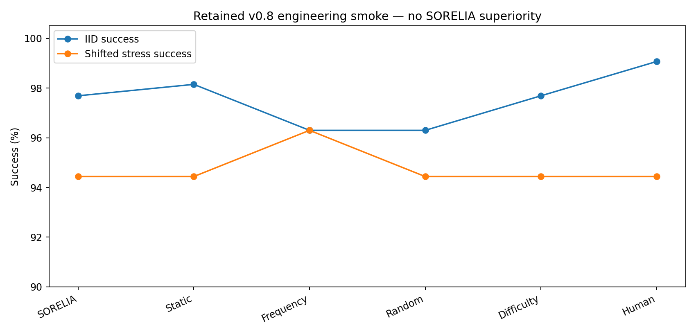
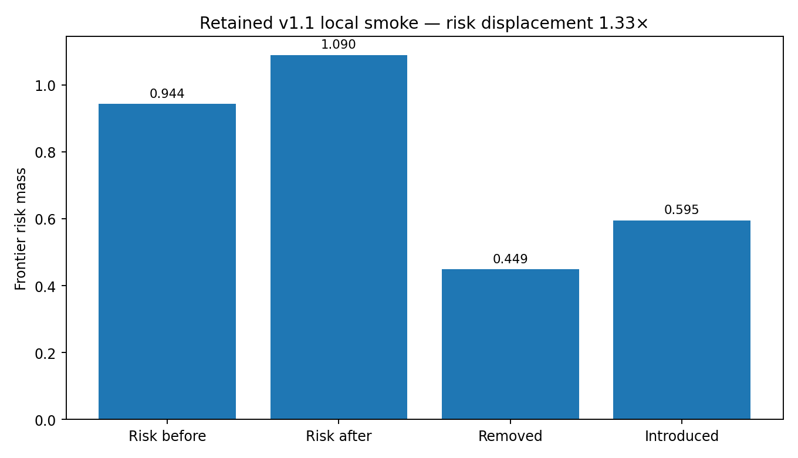

Local closed-loop smoke
Established executable end-to-end plumbing; motivated longitudinal failure tracking.
The polished page shows the research question. This page shows the messier evidence: hypotheses, failed assumptions, methodological corrections, null results, raw trajectories and the decisions that changed the project.
Each has hypothesis → setup → result → interpretation → next decision.
Including non-winning curricula, exploration regressions, matching assumptions and a benchmark bug.
Recorded with alternatives, evidence, trade-offs and outcomes.
Retained v0.8 synthetic engineering smoke. These results are intentionally not a superiority claim.
| Variant | IID success | Stress success | Failures/task | Notes |
|---|---|---|---|---|
| SORELIA | 97.69% | 94.44% | 0.532 | No superiority |
| Static priority | 98.15% | 94.44% | 0.509 | Stronger IID |
| Failure frequency | 96.30% | 96.30% | 0.625 | Best stress in this smoke |
| Human-balanced | 99.07% | 94.44% | 0.398 | Best IID in this smoke |
| Method | Mean success | Bootstrap interval | Seeds |
|---|---|---|---|
| SORELIA | 94.91% | 88.89–100.00% | N=3 |
| Random | 98.61% | 97.22–100.00% | N=3 |
| Human-balanced | 96.30% | 93.06–98.61% | N=3 |
| Difficulty | 95.83% | 94.44–97.22% | N=3 |
Retained engineering smoke only. Pairwise randomization tests did not establish a stable SORELIA advantage; see artifacts/eval_runs/v070_release_multiseed.json.

Static-priority, human-balanced and random-cluster controls sometimes matched or beat full SORELIA in the toy harness.
Removing exploration sometimes improved IID success. Exploration remains an empirical intervention, not a virtue assumed by design.
In v0.5, the arm named SORELIA still used a legacy static allocator. The result was invalid for the intended comparison; v0.6 fixed it and added a regression test.

In one retained local smoke, task success stayed at 90%, yet introduced frontier risk (0.595) exceeded removed risk (0.449): displacement ratio 1.33×. The update looked neutral through success rate and adverse through the failure frontier.
Source: artifacts/v110_smoke/metrics.json and frontier_i2.json.
Established executable end-to-end plumbing; motivated longitudinal failure tracking.
Proved the DOM/action/recovery path executes; kept it as engineering evidence only.
Flat success hid adverse risk displacement; promoted displacement to a core metric.
SORELIA did not dominate simple baselines; superiority claim was rejected.
Small effects were unstable; repeated trials became mandatory.
Method ordering changed under stress; IID alone was insufficient.
No-exploration sometimes improved IID success.
Random clusters/shuffled labels remained competitive in toy runs.
Automatic identity was ambiguous enough to require human calibration.
The source archive before this Evidence Layer did not include .git. We did not fabricate backdated commits. The new history begins with an explicit v1.5 baseline import, followed by actual Evidence Layer commits. A portable Git bundle and commit log ship in artifacts/git_history/.